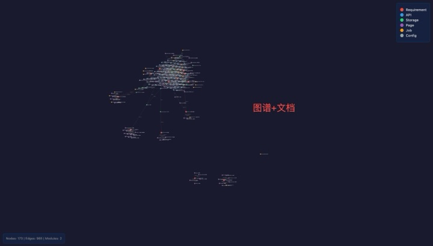
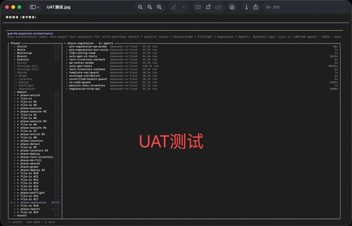
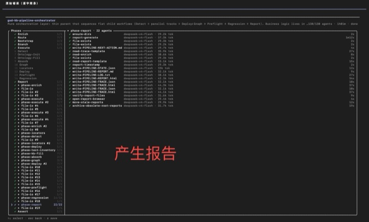

01 / WHY
为什么这样实现？
需求和设计依据散落在对话、文档与个人经验中，AI 生成的代码缺少可继承的业务上下文。
设计依据失联AI DELIVERY INFRASTRUCTURE产品介绍 · 2026
ShiftLeft Engine 将需求、代码、文档与测试串成一条持续更新的可信链路，为 AI 研发补上“为什么这样做、影响了什么、如何证明做对了”。
每条需求拥有稳定身份，研发、文档和测试围绕同一业务目标展开。
输入一句需求
AI 承担执行
系统留下证据
人负责验收
THE NEW BOTTLENECK
AI 让代码生产变快，却没有自动解决需求、实现、文档和验证之间的断裂。代码越多，企业越难回答三个基本问题。
需求和设计依据散落在对话、文档与个人经验中，AI 生成的代码缺少可继承的业务上下文。
设计依据失联一个接口发生变化，团队无法快速判断涉及哪些页面、数据、需求与回归范围。
影响范围失联测试往往在开发完成后重新理解需求，验证依据与研发过程无法形成同一条证据链。
交付证据失联企业真正缺少的不是另一个代码生成器，而是一套让 AI 研发过程可以被理解、检查和追溯的工程基础设施。
ONE REQUIREMENT, COMPLETE EVIDENCE
确定的信息交给程序提取，需要理解的语义交给 AI 补全。每个阶段都输出可复用的工程资产，而不是一次性对话。
需求文档与现有代码共同成为调查入口。
REQ / SOURCE提取接口、数据表、页面、任务与技术细节。
SCAN / EXTRACT连接需求、实现、数据与用户体验。
FILL / CONNECT生成测试用例、影响范围与交付依据。
TEST / PROVE这就是「左移」——质量不再等到编码完成才被检验，而是从需求阶段就向前移动、贯穿全程，让验证与实现走同一条证据链。
确认每条需求由哪些接口、页面和数据结构实现。
修改前看见影响范围，减少对隐性依赖的猜测。
从需求和改动自动推导测试点与回归范围。
获取精确、结构化、可查询的工程知识。
START WHERE THE PAIN IS REAL
无需一次改造全部研发体系。ShiftLeft Engine 可以从一个新需求、一个遗留模块，或一次高风险变更开始。
SCENARIO / 01
需求、调查、计划、代码和测试结果持续回写知识库，降低多 Agent 协作中的上下文漂移与黑盒风险。
SCENARIO / 02
扫描接口、数据表、页面和后台任务，为缺少文档的历史项目快速建立可查询的工程地图。
SCENARIO / 03
根据代码变更映射图谱节点，识别受影响的需求、接口、页面和数据，形成针对性的测试计划。
SCENARIO / 04
跨团队、跨供应商的研发活动围绕统一需求身份协作，降低人员更替和信息断层带来的交付风险。
CONNECT, DON'T REPLACE
我们提供工程知识与追溯底座；合作伙伴带来客户场景、行业知识、执行工具与交付网络。
ShiftLeft Engine 不要求客户推倒重来。它位于需求管理、代码仓库、AI 开发、测试执行与 DevOps 之间，补齐原本缺失的关系。
我们把「测试左移工程平台」这列火车拆成一张张可独立安装的拼图——本期已交付最底层的工程能力（27 个 gsd-kb-* 技能 + 零依赖 Python 引擎），每一块都能独立使用、直接上手。真正想拼整列火车的人，从这些轮子出发，就是上车最快的路。
WORKING CORE, OPEN WINDOW
核心能力已经可运行；产品仍处于适合合作伙伴共同定义行业方案、执行连接和商业模式的阶段。
HONESTY BY DESIGN
测试左移有一道关键纪律：需求没说的，不测。严格对齐需求的测试首次通过率约 95%；自由发挥式追求质量的测试首次通过率约 70%，应单独成阶段——缺了这一条，就会出现「测了很多，却没证明需求」。而验证，必须始于需求、止于证据。
严格对齐需求原文，先证明实现成立
TRUTH-FIRST / STRICT SCOPE边界、异常、性能单独开一轮，不与需求验收混淆
QUALITY-MAX / OPTIONAL PASS内部完整流水线验证
130 AGENTS示例图谱节点
示例追溯关系
Python 引擎、CLI、离线图谱已可运行
说明：130 Agent / 61 分钟来自项目内部完整流程实测记录；31 节点 / 86 关系来自仓库示例知识库的本地运行结果，不作为客户收益数据。
SEE IT RUN
点击观看完整演示视频，见真实运行截图。提示：若画面模糊，请在 YouTube 播放器内把画质调到 1080P（360P 看不清）。



START SMALL. PROVE SOMETHING REAL.
不先讨论庞大的合作协议。选择一个业务模块、一条真实需求和一套现有代码，共同跑通一次可信交付闭环。
一个边界清晰、确实存在交付痛点的业务模块。
生成知识库、追溯图谱、影响范围和测试用例。
共同评估准确性、接入成本与行业复制价值。
适合拥有客户场景、测试能力、AI 平台或行业知识的伙伴。
wanglikai201101@gmail.com